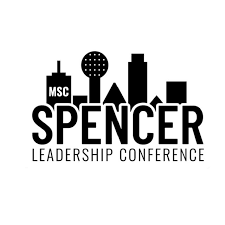

Educated peers through workshops on data science tools and technologies such as machine learning, APIs, and analytics platforms, helping students strengthen their technical skill sets.
Engaged with the community by tabling for the club, raising awareness of TAMU Datathon and guiding students toward resources to grow their data science capabilities.
Supported large-scale event operations for TAMU Datathon Lite and TAMU Datathon by coordinating logistics including food, shirts, and participant management to ensure smooth execution.
MSC SPENCER

Volunteered at a local nursing home in Dallas, engaging with residents, listening to their stories, and learning how to better support the well-being of older community members.
Contributed to facility upkeep by helping repaint fences, ensuring the environment was polished, welcoming, and up to date.
Gained perspective on community service through hands-on activities that emphasized compassion, care, and responsibility toward others.